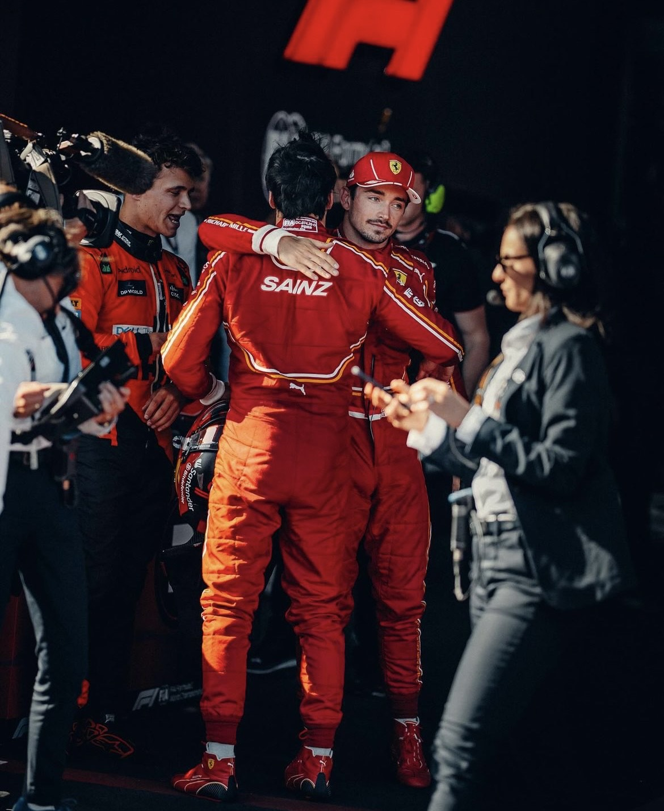

Últimas Noticias
¿Qué le pasó a Sainz en Australia?
El piloto de Ferrari Carlos Sainz puso fin al dominio de Red Bull en la Fórmula 1 y ganó el Gran Premio de Australia después de que Max Verstappen tuviera que retirarse, apenas dos semanas después de que el español se perdiera la carrera anterior en Arabia Saudí debido a una apendicectomía de urgencia

"UN GRAN UNO-DOS EN AUSTRALIA"
Leclerc terminó el GP de Australia con un segundo puesto por detrás de su compañero de equipo. El monegasco se mostró satisfecho con el rendimiento mostrado por el SF-24 y, sobre todo, con la trayectoria de crecimiento del Cavallino.
Ferrari se marcha de Australia con un uno-dos que le trae dulces recuerdos. Aunque el resultado se vio facilitado por la retirada de Max Verstappen debido a un problema con su freno trasero derecho, que se bloqueó hasta el punto de obligarle a aparcar su coche incendiado en boxes, por otro lado el equipo italiano estaba preparado, haciendo realidad un potencial que ya se pudo apreciar el viernes.
El último uno-dos teñido totalmente de Rojo había llegado hace unos dos años, en aquel Gran Premio de Bahrein 2022, cuando Leclerc fue el vencedor. Evidentemente, las sensaciones y los escenarios actuales son completamente diferentes a los de hace dos temporadas, pero queda la satisfacción por haber completado un fin de semana convincente en cuanto a rendimiento.
Un uno-dos que da moral a todo el equipo. "Es un resultado positivo, sobre todo para el equipo. Primero y segundo en la meta era algo que no sucedía desde el Gran Premio de Bahrein de 2022, lo que me trae buenos recuerdos. Es fantástico haber conseguido de nuevo este resultado", explicó Leclerc tras la carrera, antes de alabar el trabajo de Sainz, que fue capaz de materializar el resultado tanto en clasificación como en carrera.
